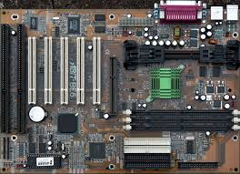

← Listeye Dön
🌐 Resmi Destek

Abit BX6 Rev.2
Intel 440BX yonga setiyle overclock tutkunlarının gözdesi olmuş klasik anakart.
Özellik
Değer
Soket
Slot 1
Chipset
Intel 440BX
RAM
3x SDRAM Slot
PCIe
PCI (AGP 2x)